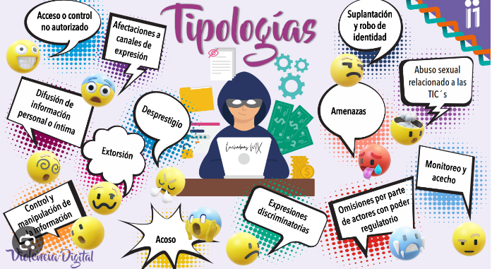

¿ Qué características de las TIC (Técnicas de investigación de campo) están presentes en la violencia digital ?
Las técnicas de investigación de campo permiten recolectar datos directamente del entorno en el que ocurren los fenómenos sociales. Cuando se aplican al estudio de la violencia digital, varias características de estas técnicas resultan especialmente útiles.
Las principales características de las técnicas de investigación de campo presentes en la violencia digital son:
Observación directa de comportamientos en línea.
Contacto con los actores involucrados (víctimas y agresores).
Recolección de datos desde el entorno real donde ocurre la violencia (el espacio digital).
Contextualización y análisis del fenómeno en su ambiente social y tecnológico.

Para investigar si un suceso constituye violencia digital, se debe aplicar un proceso sistemático de investigación social, adaptado al entorno virtual.
PASOS PARA INVESTIGAR UN CASO DE VIOLENCIA DIGITAL
1. Planteamiento del problema
Objetivo: Definir con claridad qué se quiere investigar.
Ejemplo: ¿El contenido compartido en redes sociales sobre una persona constituye acoso digital.
2. Recolección de información preliminar
Fuentes: Capturas de pantalla, enlaces, mensajes, publicaciones, comentarios.
Importante: Verificar la autenticidad del contenido y la fecha.
3. Definición de criterios de violencia digital
Basarse en marcos teóricos o legales. Por ejemplo:
Ciberacoso: mensajes reiterados y ofensivos.
Grooming: contacto con menores con fines sexuales.
Difusión no consentida de imágenes íntimas.
Amenazas, discursos de odio, doxing (exposición de datos personales).
4. Aplicación de técnicas de investigación
a) Observación digital (no participante)
Explora el perfil del agresor, la víctima y el contexto de las publicaciones.
Recolecta patrones de comportamiento, frecuencia, lenguaje usado.
b) Entrevistas o encuestas (si es posible)
A la víctima: conocer cómo se sintió, consecuencias emocionales o sociales.
A testigos: qué observaron, cómo reaccionaron.
Ojo: Asegurar la confidencialidad y el consentimiento informado.
c) Análisis de contenido
Analizar las publicaciones o mensajes en busca de:
Palabras ofensivas o discriminatorias.
Repetición sistemática.
Intención de dañar o humillar.
Reacciones del público (aprobación o rechazo).
5. Análisis e interpretación
¿El contenido cumple con las definiciones de violencia digital?
¿Es un hecho aislado o parte de una campaña sostenida?
¿Cuál es la intención aparente del agresor? ¿Hubo daño real?
6. Conclusión
Determinar si el suceso sí constituye violencia digital, en qué forma y bajo qué criterios.
Identificar recomendaciones o pasos siguientes: denuncia, atención psicológica, medidas preventiva.